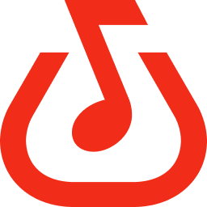
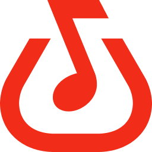

@Caloybitz123
@Caloybitz123
" I started singing way back when I was a kid. My musical influences during those times were my Tito Jun Polistico and my Dad Obet Polistico, who are both singers.
I eventually, transitioned from a ballad to a more modern take of Pop and Acoustics.
I'm very fond of listening to song of Lany, Michael Pangilinan, Arthur Nery, Dionela, Zack Tabudlo and many more."
A group of Call Center Agents, Supervisors and Managers United by Music